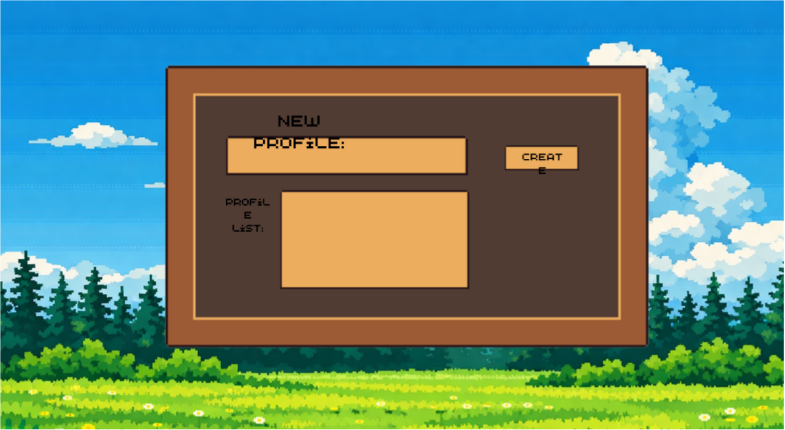
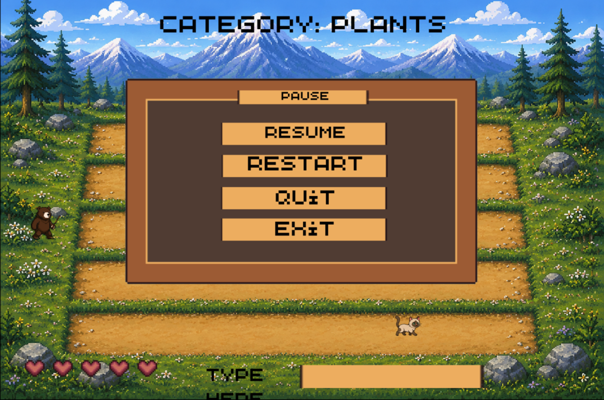
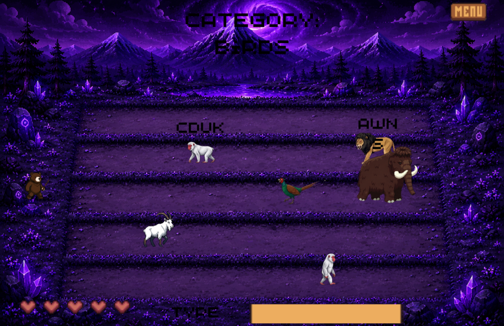

WorldUp: TyperShark
Word Up! is the ultimate jumbled-word educational game designed to make learning languages and mastering words an absolute blast, Whether you are a student looking to ace your next English test, an avid reader wanting to sharpen your mind, or just someone.
The Challenge & Process
Ready to give your brain a workout and take your vocabulary to the next level? Word Up! is the ultimate jumbled-word educational game designed to make learning languages and mastering words an absolute blast.
The development cycle was divided into three structured milestones:
- Phase 1 (Unscramble Analyze & Decode): Players look at the jumbled mess and begin testing combinations. This stage exercises spatial reasoning, phonics, spelling recognition, and working memory.
- Phase 2 (Solve "The Animal Words" Moment): The satisfying instant the letters snap into their correct positions. This gives the player a hit of dopamine, reinforcing their problem-solving success and building confidence.
- Phase 3 (Expand The Learning Phase): Solving the word is only half the battle. Once unlocked, the game instantly provide so bridge the gap between reading a word and actually using it


Project Results
Before It Hits redefines disaster preparedness by replacing traditional, text-heavy manuals with a fast-paced, high-consequence survival simulation. The project balances rich visual storytelling with strict optimization, ensuring that the game reacts instantly to user choices when simulating the intense final moments before a crisis.
Key performance metrics accomplished by the end of deployment:
- Sub-Millisecond Input Response: Optimized JavaScript event handlers to calculate user choices and branch the narrative instantly, mirroring the split-second decisions required in real-life emergencies.
- Ultra-Lightweight Asset Footprint: Compressed all game assets, icons, and audio cues to ensure the entire simulation loads in under two seconds, even on weak mobile networks or older hardware.
- Adaptive HUD Responsiveness: Designed a flexible, fluid heads-up display that anchors critical countdown timers and survival inventories perfectly across all screen aspect ratios without blocking the gameplay view.